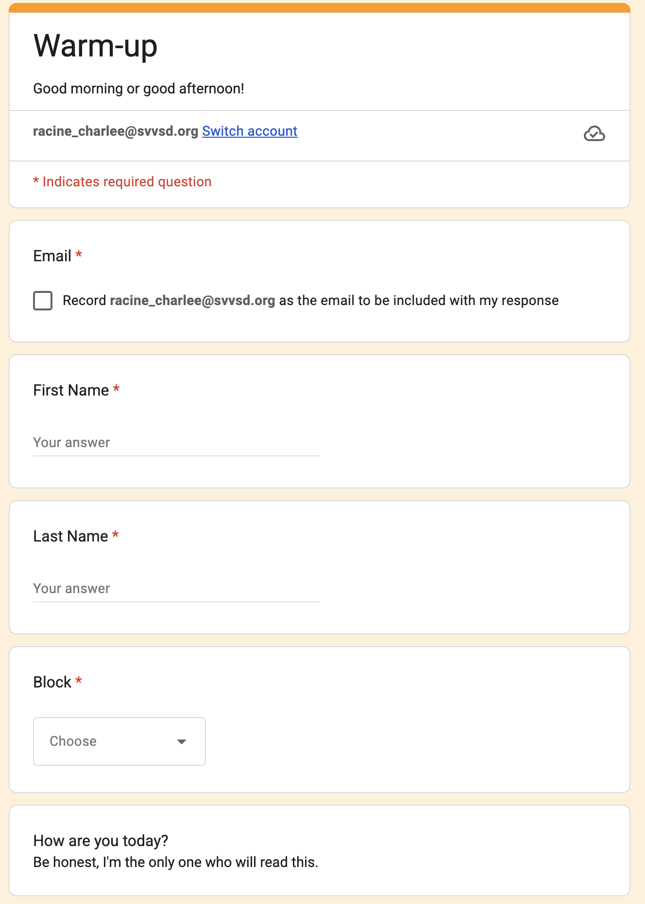
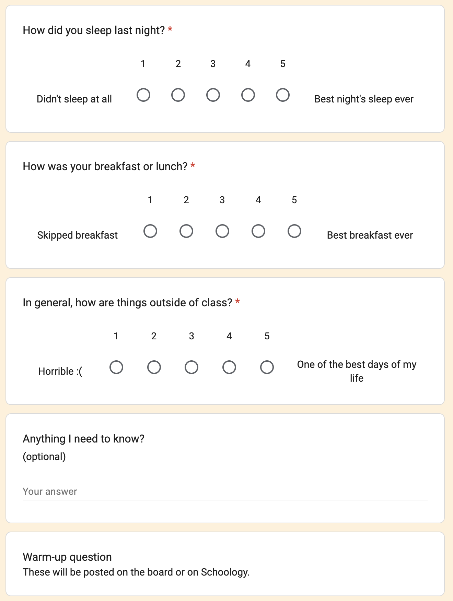
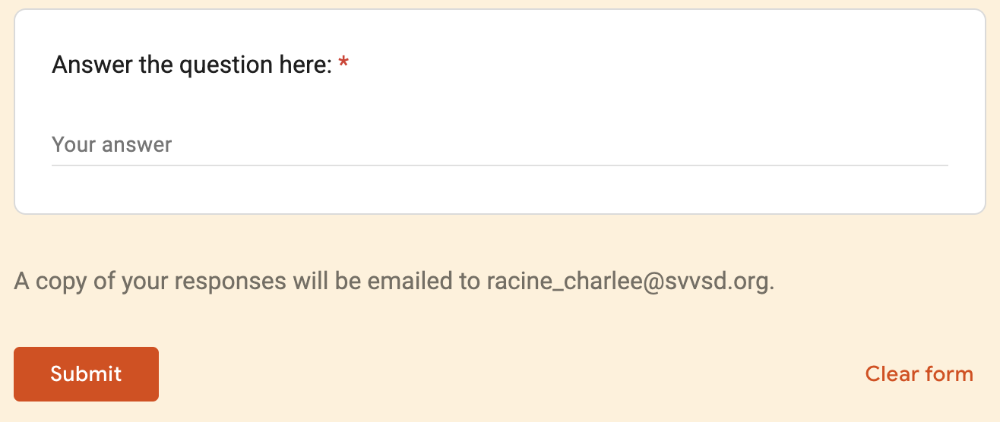

Quality Standard III
Teachers plan and deliver effective instruction and create an environment that facilitates learning for their students.
Element A – Teachers demonstrate knowledge about the ways in which learning takes place, including the levels of intellectual, physical, social, and emotional development of their students.



This Pulse Check artifact demonstrates my commitment to the whole-child approach by recognizing that physiological and emotional needs directly impact cognitive performance. By surveying students on their sleep, nutrition, and external stressors alongside a content-based warm-up, I acknowledge that intellectual growth cannot occur in a vacuum. This daily data allows me to pivot my instruction in real-time, providing necessary "safety nets" or additional scaffolding for students who are not currently in an optimal state for high-level learning.
Furthermore, this practice supports social and emotional development by providing a consistent, private channel for students to share personal challenges. I use these digital touchpoints to build a culture of trust and responsive pedagogy. This evidence shows I don't just teach Economics and Business, but also monitor the physical and emotional readiness of my learners to ensure they have the stability required to master complex global concepts.